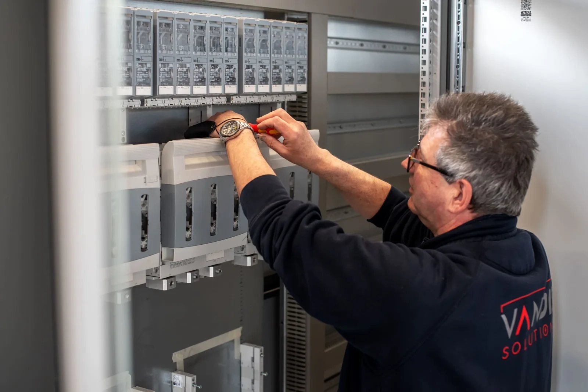

De PLC is het brein van uw installatie. Wij programmeren, installeren en optimaliseren PLC-besturingen die uw productieproces betrouwbaarder en efficiënter maken.

Een PLC (Programmable Logic Controller) is een industriële computer die machines en processen bestuurt. Via in- en uitgangen is de PLC verbonden met sensoren en actuatoren, waardoor uw systeem realtime gegevens verwerkt en direct reageert.
Met een goed geprogrammeerde PLC optimaliseert u productieprocessen, minimaliseert u storingen en verhoogt u de efficiëntie. Wij leveren PLC-oplossingen die exact aansluiten op uw proces, van eenvoudige besturing tot complexe processturing.
Van nieuwbouw tot revisie van bestaande besturingen: onze engineers spreken elke PLC-taal.
Vrijblijvend gesprek over uw proces en wensen.
Engineering, schema's en componentkeuze.
Assemblage en bedrading in eigen werkplaats.
Volledige functietest vóór uitlevering.
Installatie, inbedrijfstelling en onderhoud.
Onze engineers hebben ervaring met alle gangbare PLC-platformen. We adviseren merkonafhankelijk wat het beste bij uw toepassing en budget past.
Ja, we reviseren en breiden bestaande besturingen uit zonder dat de complete installatie vervangen hoeft te worden.
Ja, we testen op locatie tot alles aantoonbaar werkt en dragen de besturing pas dan over.
De kosten hangen af van de omvang en complexiteit van het proces. Een adviesgesprek is gratis; daarna ontvangt u binnen 5 werkdagen een offerte.
Vrijblijvend adviesgesprek · Offerte binnen 5 werkdagen · Reactie binnen 24 uur